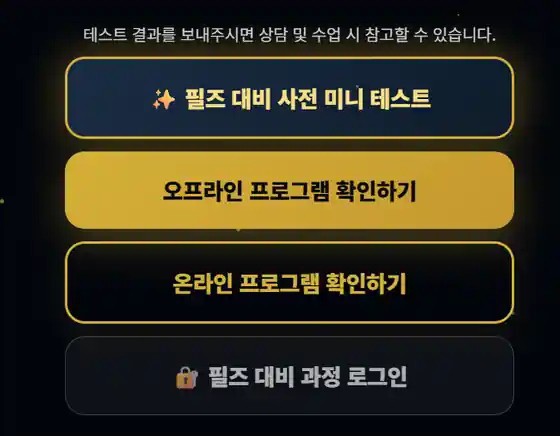

필즈 더 클래식 대비
LETE-ON 아카이브 사용 매뉴얼
승인번호 로그인부터 개념 학습, 진단 모의고사, 약점 처방전, PDF 저장, 필즈 필수 연산 연습까지 실제 화면과 함께 안내합니다.
01
STEP 1
접속하기
필즈 더 클래식 안내 페이지에서 LETE-ON 아카이브 로그인 화면으로 이동합니다.

- 1필즈 더 클래식 안내 페이지에 접속합니다.
- 2화면 하단의 필즈 대비 과정 로그인을 누릅니다.
- 3가입 완료 이용자는 아카이브 직접 주소로 바로 이동할 수 있습니다.
02
STEP 2
승인번호와 학생 이름으로 로그인
학원에서 제공받은 승인번호와 학생 이름을 입력합니다.
- 1첫 번째 입력칸에 승인번호를 입력합니다.
- 2두 번째 입력칸에 학생 이름을 입력합니다.
- 3입장하기 →를 누릅니다.
이용 안내승인번호는 다른 사람과 공유하지 마세요. 로그인 오류 시 번호와 이름의 띄어쓰기·오타를 확인해주세요.
03
STEP 3
열람 가능한 수업 확인
로그인 후 학생에게 열람 권한이 부여된 과정만 표시됩니다.
- 1왼쪽 메뉴에서 학습할 과정을 선택합니다.
- 2오른쪽에서 교재 또는 회차를 선택합니다.
- 3열람 권한이 없는 과정은 보이지 않거나 잠금 상태로 표시될 수 있습니다.
TOP SECRET 개념연산 연습킬러문항 완전 해체진단모의고사실전 모의고사파이널 모의고사
04
STEP 4
TOP SECRET 개념 학습 시작
Vol.1부터 Final까지 원하는 교재를 선택해 학습을 시작합니다.
- 1TOP SECRET 개념을 선택합니다.
- 2Vol.1~Final 중 학습할 교재를 고릅니다.
- 3학습 주제를 확인한 뒤 학습 시작을 누릅니다.
Vol.1 수와 규칙Vol.2 저울과 패턴Vol.3 숨겨진 수Vol.4 바둑돌의 비밀Final 종합 체크
05
STEP 5
영상과 교재를 함께 학습
왼쪽 영상과 오른쪽 교재가 같은 학습 위치로 함께 이동합니다.
- 1개념영상 또는 유형반복을 누릅니다.
- 2영상이 선택한 학습 위치로 이동합니다.
- 3오른쪽 교재도 해당 페이지로 자동 스크롤됩니다.
- 4이전 쪽·다음 쪽으로 직접 이동할 수도 있습니다.
화면이 좁게 보일 때브라우저 창을 넓히거나 태블릿을 가로 방향으로 돌려주세요.
06
STEP 6
재원생 로드맵과 서재
재원생은 권장 학습 순서인 로드맵과 전체 프로그램 서재를 모두 이용할 수 있습니다.
- 1로드맵에서 권장 학습 순서를 확인합니다.
- 2서재에서 열람 가능한 전체 프로그램을 확인합니다.
- 3상단 전환 버튼으로 두 화면을 자유롭게 이동합니다.
07
STEP 7
교재를 PDF로 저장
현재 선택한 교재를 실제 PDF 파일로 제작해 자동 다운로드합니다.
- 1PDF로 저장하기를 누릅니다.
- 2교재 페이지를 불러오고 PDF로 변환하는 동안 기다립니다.
- 3완료되면 파일이 자동으로 다운로드됩니다.
중요제작 중에는 창을 닫거나 새로고침하지 마세요.
08
STEP 8
PDF 다운로드 완료 확인
제작 완료 메시지와 브라우저 다운로드 목록에서 파일을 확인합니다.
- 1다운로드가 완료되었습니다. 문구를 확인합니다.
- 2브라우저 다운로드 목록에서 PDF 파일을 확인합니다.
- 3컴퓨터의 다운로드 폴더에서도 찾을 수 있습니다.
09
STEP 9
진단 모의고사 답안 입력
빠른 OX 또는 주관식 입력 모드로 답안을 입력하고 진단 결과지를 생성합니다.
- 1빠른 OX: 맞은 문제만 선택해 빠르게 입력합니다.
- 2주관식 입력: 학생이 작성한 답을 직접 입력합니다.
- 3사고력 문항과 연산 테스트를 모두 입력합니다.
- 4채점하고 진단 받기 →를 눌러 결과지를 생성합니다.
10
STEP 10
약점 처방전으로 유사문항 학습
진단 후 학생의 약점과 연결된 유사문항을 자동으로 제공합니다.
- 1진단 결과에서 약점 처방전을 선택합니다.
- 2유형별로 보기는 같은 약점을 집중 연습할 때 사용합니다.
- 3섞어서 보기는 여러 유형을 종합적으로 연습할 때 사용합니다.
- 4필요하면 인쇄하거나 문항별 해설 영상을 확인합니다.
11
STEP 11
필즈 연산 연습
필즈 대비 과정에서 꼭 필요한 연산을 유형별로 반복해서 연습할 수 있습니다.
필즈 수업 필수 연산
사고력 문제에서 생기는 계산 실수를 줄이기 위한 필즈 전용 연산 연습입니다. 넘버스매직이 아니라 아래 필즈 연산 페이지로 연결됩니다.
- 1필즈 연산 연습 페이지에 접속합니다.
- 2필요한 연산 유형을 선택합니다.
- 3같은 유형을 반복해 정확도와 속도를 높입니다.
12
STEP 12
6·7세 추천 연산 과정
6·7세 학생은 초급 과정과 극장 영상을 먼저 이용하는 것을 권장합니다.
- 1PRIME 초급 과정부터 시작합니다.
- 2극장 영상에서 학년별 연산 영상을 선택합니다.
- 3기초가 안정된 뒤 중급·고급 과정으로 이동합니다.